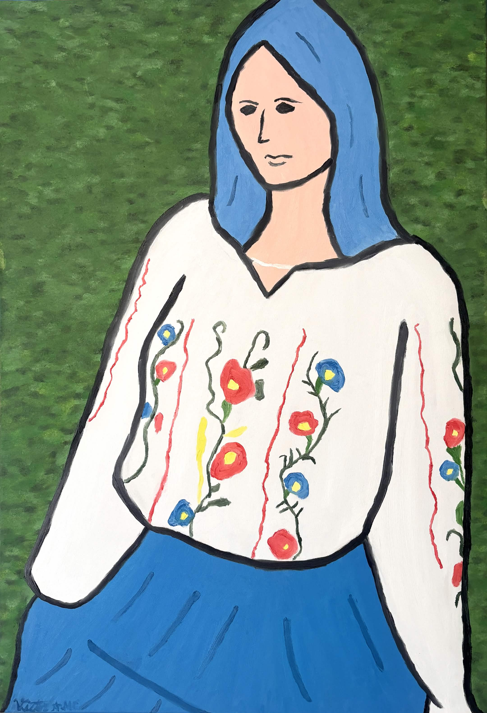
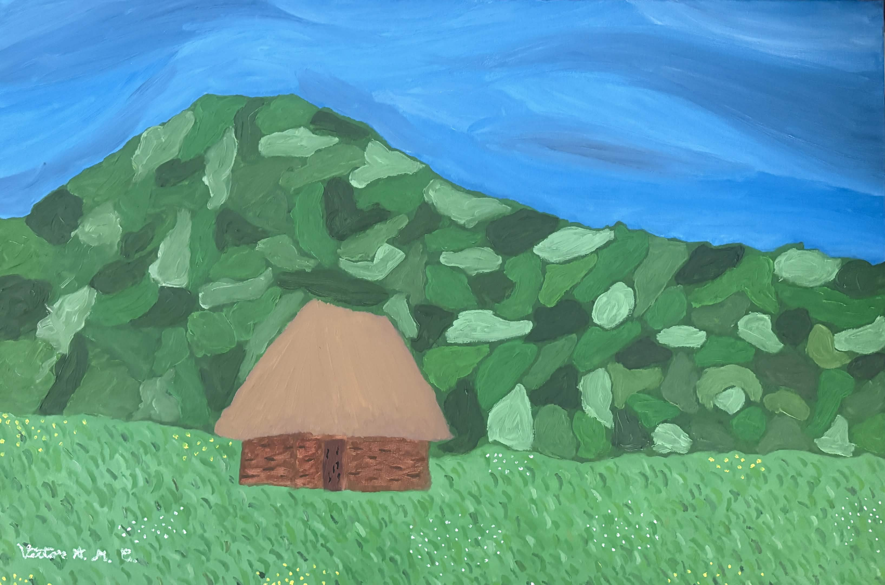
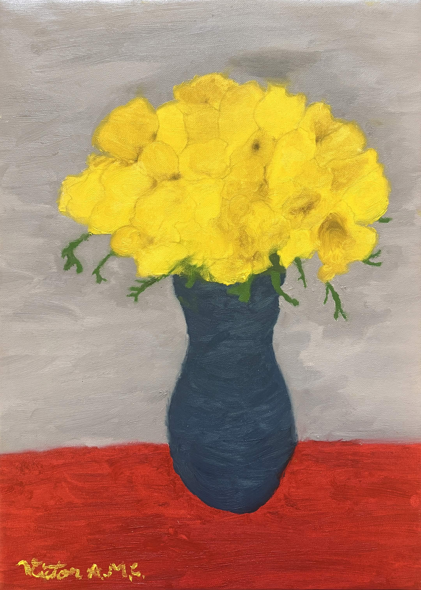
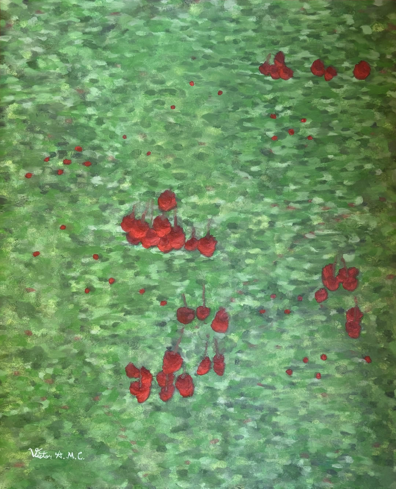

Ie Modernă
96.5x66 cm
Ulei pe Canvas
Expus la Centrul Cultural Româno-American din Minnesota
2026

Casă Țărănească
61x91.5 cm
Ulei pe Canvas
Expus Într-o Colecție Privată
2026

Frezii
46x33 cm
Ulei pe Canvas
Expus Într-o Colecție Privată
2026

La Cireșe
44x66 cm
Ulei pe Canvas
Expus Într-o Colecție Privată
2026